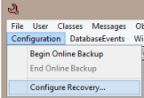
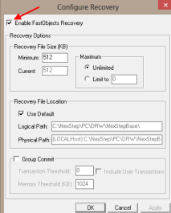

Replacing Access 2 Instrument
This procedure describes how to replace an Access 2 instrument in a workgroup or a single system environment. The PC is not replaced.
-
Install the Access 2 system software and APF.
-
Remove the CD from the drive when the
Setup Complete window displays, and then select the
Yes, I want to restart my computer option.
Note: If installing software on a Mini PC select the PC will automatically reboot. When the UI asks for an APF cd select cancel and proceed to step d.Note: When rebooting the Privacy & Security compliant Windows 8 or Windows 10 PC, you must enter security password "Access2Admin" when prompted to launch Windows.

-
(Mini PC Access 2i Only) Configure the system to enable backups to complete.
Note: Immediate and scheduled backups will not complete after software version 6.2.3 is loaded until these steps are completed.
- Press the Windows key and open the Fast Objects Administrator icon. If the icon is not available on the desktop, type "fast" and then open the program.
- Select File > Open Database and type localhost for Host and LXiAccessLocal for the Database.
- Select
Configuration > Configure Recovery.

- Check the box for
Enable FastObjects Recovery then select
Apply and
OK.

- Close the FastObjects Administrator program.
- Reboot the PC.
Note: When rebooting the Privacy & Security compliant Windows 8 or Windows 10 PC, you must enter security password "Access2Admin" when prompted to launch Windows.
-
When the
There are no defined assays. Please insert the Assay installation CD message is displayed after the PC reboots, insert and then load the correct APF CD.
Note: If APF or AAF CD is not available, download APF or AAF files from beckmancoulter.com site or Access Applications Service Manual. Refer to Chapter 10.2.9 Software Download APF Installation Instructions procedure.
- If installing APF
setup.exe file (downloaded from beckmancoulter.com) from USB drive or CD:
- Navigate to the USB drive or CD drive. Double-click on the file setup.exe.
- Select
Setup to transfer the APF files to your system.

- From the following window, press
[Enter] to return to the Explorer window.

- Close the Explorer window by selecting the X in the upper right corner.
- Relaunch the user interface and select OK to install the APF.
- If installing APF from USB drive (downloaded from the Access Applications Service Manual):
- For Windows 10 and Windows 8, press Windows key, type regedit and select Registry Editor or regedit.exe to open Registry Editor. For Windows XP, press the Windows key, type regedit and select OK to open Registry Editor.
- Select HKEY_LOCAL_MACHINE > SOFTWARE > Beckman > NexStep.
- In the Nexstep folder, right click on APFLoadPath, select Modify, change the value from D: to E: or F:.
- Relaunch the user interface and select OK to install the APF.
- Restore the APFLoadPath value from E: or F: to D:, using the Registry Editor.
- If installing APF from CD (downloaded from Access Applications Service Manual), relaunch the user interface and select OK to install APF.
- If installing AAF from CD (downloaded from Access Applications Service Manual):
Update the AAF (DxC600i)
- At the DxC console, a window informs you that there is a version mismatch. Select <OK> to close the window.
- From the DxC Main Menu, be sure that the DxC is in the Standby mode.
- Select the Setup icon to display the System Setup screen.
- On the right side of the screen, use the scroll bar and then select <27> Chem Update to display the Chem Update screen.
- Under the System heading, select the AAF option. Select <OK> .
- The screen prompts you to install a chemistry update diskette into the diskette drive. Open underneath the Access 2 analyzer and insert the AAF CD into DxC computer. Select <OK>.
- A Chemistry Update message appears. Select <OK> to accept the update.
- When the update is complete, a message appears and confirms that the update was successful. Remove the AAF or APF/AAF from the DxC computer. Select <OK> to close the Chem Update window.
- Back up the system parameter information. For more information on performing a system backup, see your system documentation.
- Clearly label the backup diskette with the title System Parameters Only. Include the software and chemistry database versions, the instrument serial number, and today’s date on the label. Store the backup diskette in a safe place.
- If installing APF
setup.exe file (downloaded from beckmancoulter.com) from USB drive or CD:
-
Remove the CD from the drive when the
Setup Complete window displays, and then select the
Yes, I want to restart my computer option.